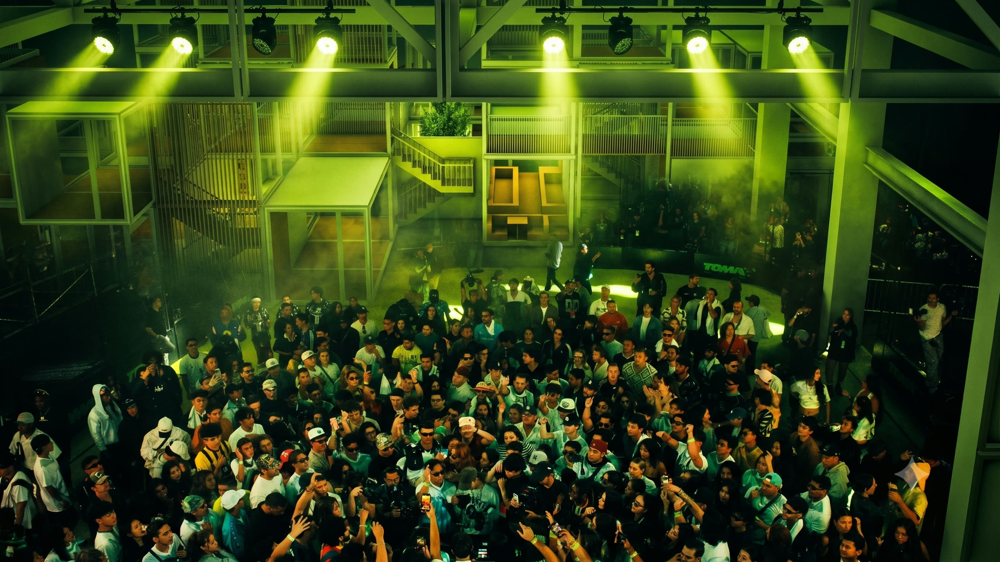
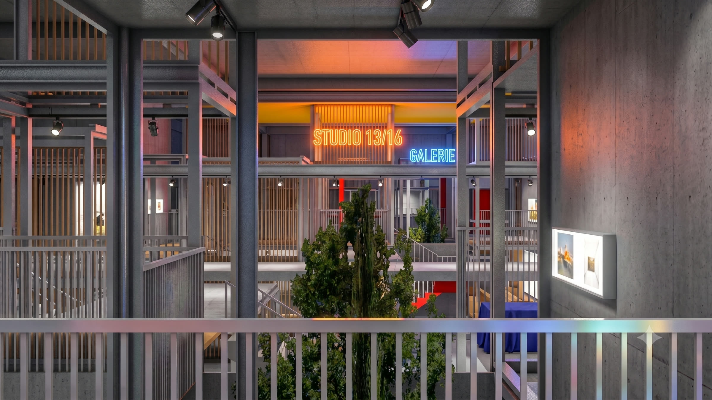
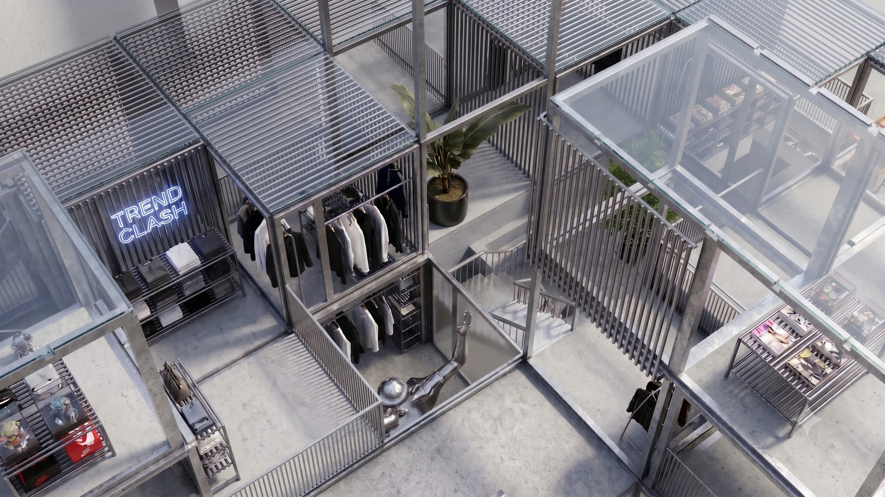
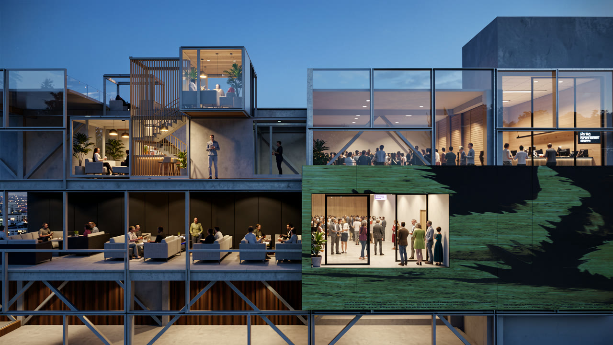
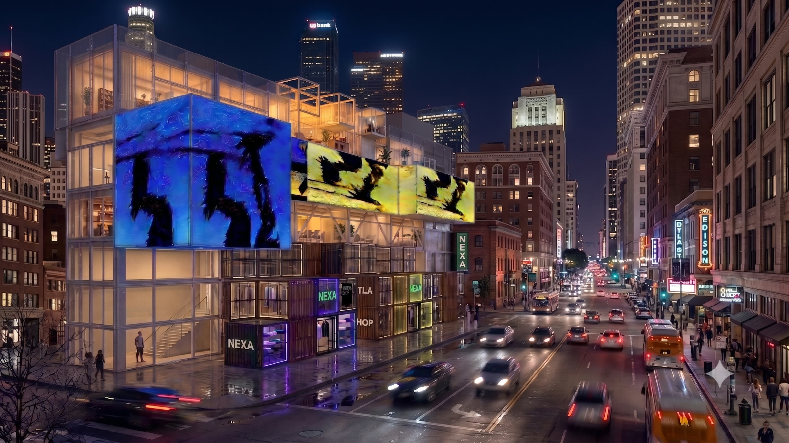

Adaptive building platform
for buildings that evolve with use
The brief is sorted by how long each program has to last. Long becomes permanent structure, short becomes relocatable units, and the loop runs again whenever the use changes.

Units pull back, decks become galleries and the plan opens to a crowd. Nothing structural moves to do it.

The same bays take galleries and short tenancies, re-plugged on a two to three year cycle instead of a fifty year one.

Shopfronts arrive as units and leave as units. The floor plate they sit on was never rebuilt for them.
Everything that is not structure arrives as a unit and leaves as one. No wet trades, no cutting.


Modular builders optimise construction. Material passports record it. Digital twins monitor it. None of them can reconfigure a building. NEXA runs the whole lifecycle.
Hand NEXA a brief and a site. It resolves into a buildable massing, and re-solves every time the program changes.